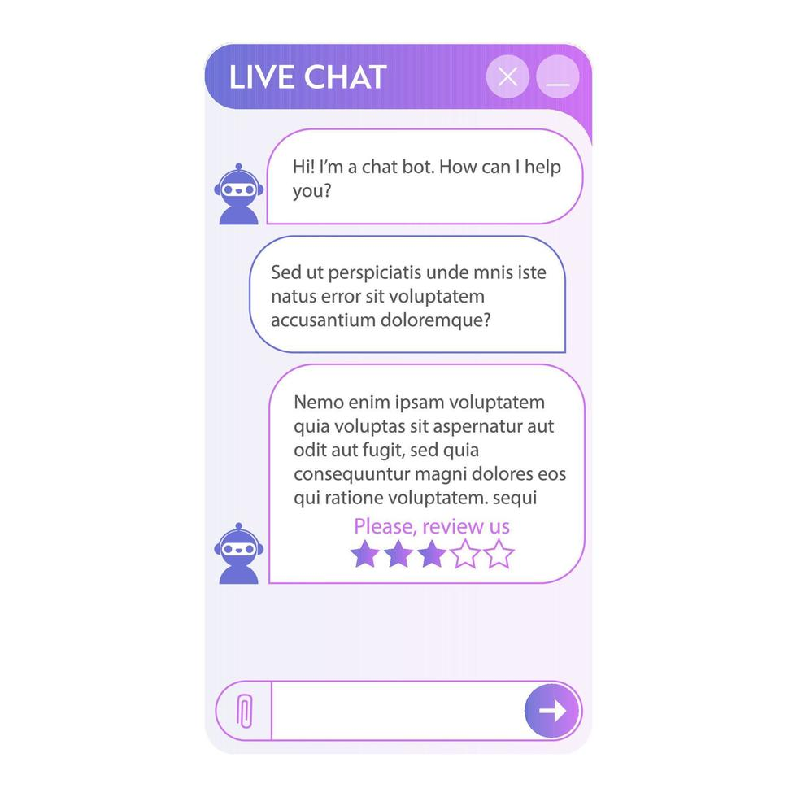

1. Tools and Technology
This solution could be built using HTML, CSS, and JavaScript for the website, a chatbot API or AI model for conversation, and a simple database to store appointment and user request information.
A proposal for using artificial intelligence to improve patient support, reduce wait times, and increase efficiency in local healthcare clinics.
Explore ProjectMany community clinics face high call volume, long wait times, and limited staff resources. Patients often need quick answers about office hours, appointment availability, insurance questions, and basic care instructions.
Front desk staff can become overwhelmed, and this may lead to delays, frustration, and missed appointments.

The AI Patient Assistant is a chatbot and support tool that can answer common patient questions 24/7. It can help users book appointments, receive reminders, learn clinic policies, and get directed to the correct department.
The system could use natural language processing (NLP) to understand patient questions and provide helpful responses in simple language.
This solution could be built using HTML, CSS, and JavaScript for the website, a chatbot API or AI model for conversation, and a simple database to store appointment and user request information.
The system would need clinic hours, appointment availability, FAQ responses, provider schedules, and general patient support information.
Patients visit the website, ask questions, receive answers, and are guided to book appointments or contact staff if needed. More serious cases can be escalated to a real person.
This solution could reduce front desk workload, improve patient satisfaction, and make it easier for people to get information quickly. Patients would not have to wait on hold for simple questions.
Clinics could save time, improve scheduling, and provide better service to the community.
Patient information must be protected. The system should not share personal data and must follow healthcare privacy rules.
AI responses must be accurate and fair. The chatbot should be trained and reviewed carefully so it does not mislead patients.
AI should support staff, not replace them completely. Patients must still have access to human assistance when needed.
I learned how to organize an AI proposal into a website and use images to make my content more engaging. One challenge was deciding how the AI would work in a realistic way, but this project helped me think more carefully about solving real problems with technology.